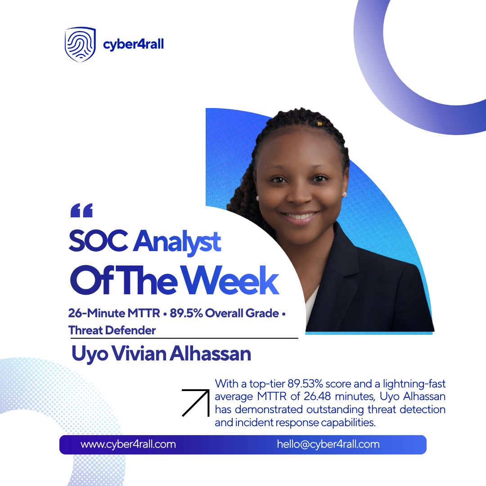

☁
Cloud Security
I secure cloud environments by strengthening access controls, hardening infrastructure, improving security visibility, and reducing unnecessary exposure.
CYBERSECURITY ANALYST
I help organizations reduce cyber risk through practical security solutions that protect people, systems, and business operations.
Hands-on experience across cloud security, security operations, threat detection, vulnerability management, and information security.
WHAT I DO
I secure cloud environments by strengthening access controls, hardening infrastructure, improving security visibility, and reducing unnecessary exposure.
I investigate security alerts, analyze suspicious activity, develop and validate detections, and help improve how threats are identified and responded to.
I help identify and reduce security risks through vulnerability management, security assessments, practical controls, documentation, and compliance support.
SELECTED SECURITY WORK
Hands-on cybersecurity projects demonstrating how I identify risk, implement security controls, validate results, and translate technical findings into practical security outcomes.
WAZUH SIEM · DETECTION ENGINEERING
Designed and validated custom Wazuh detection rules for SQL injection, Linux cron persistence, and sudo-based privilege escalation, with severity classification and MITRE ATT&CK mapping.
View Case Study →CLOUD SECURITY · INFRASTRUCTURE HARDENING
Secured and monitored a cloud-hosted financial application environment through Linux hardening, role-based access control, least privilege, secure connectivity, centralized monitoring, and security validation.
Role: Cloud Engineer — Team D
View Case Study →MICROSOFT AZURE · SIEM
Integrated and validated Azure Activity Logs and Microsoft Defender for Cloud to strengthen centralized security visibility in Microsoft Sentinel, using KQL to verify security telemetry in Log Analytics.
View Case Study →
RECOGNITION
Cyber4rall Practical SOC Residency
Recognized for strong performance during hands-on SOC operations involving security monitoring, alert investigation, incident triage, threat detection, and response.
ABOUT ME
I’m a cybersecurity professional with hands-on experience across security operations, cloud security, vulnerability management, and information security.
What interests me most about cybersecurity is not just finding a vulnerability or responding to an alert, but understanding what the risk means for the organization and what practical steps can be taken to reduce it. Whether I’m investigating security activity, securing a cloud environment, or validating a security control, I focus on solutions that are practical, measurable, and aligned with the needs of the business.
My experience spans MSP security operations, cloud security projects, SOC investigations, and continuous hands-on learning across Microsoft Azure, AWS, Microsoft Sentinel, and Wazuh.
LET’S CONNECT
I’m open to cybersecurity opportunities where I can contribute to protecting systems, reducing security risk, and strengthening security operations while continuing to grow across cybersecurity and cloud security.